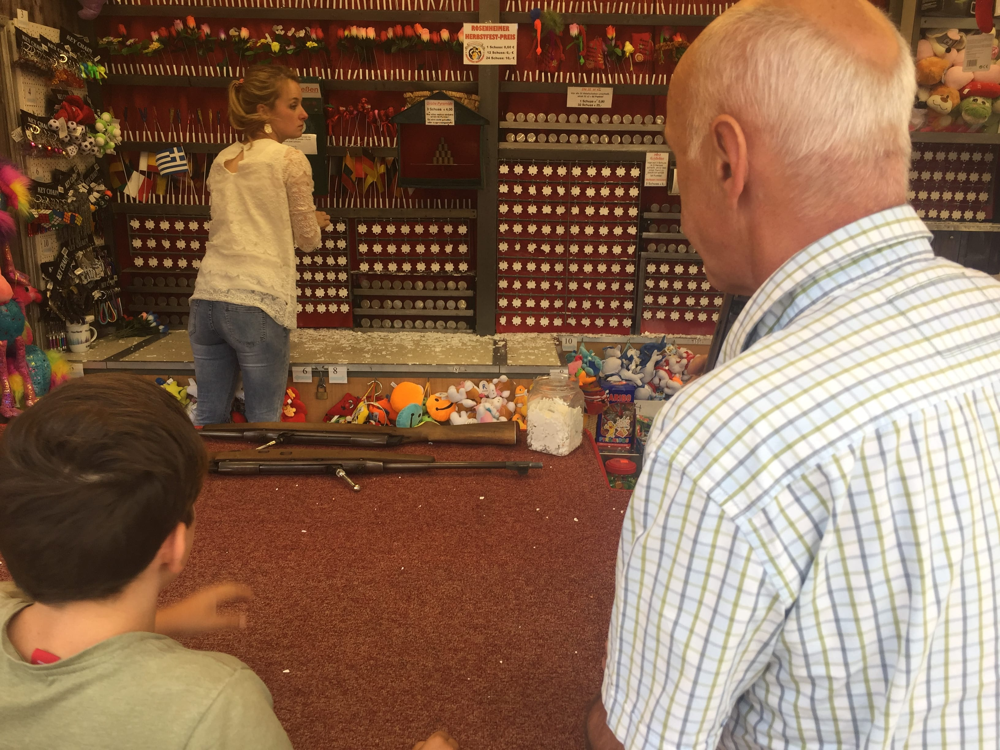
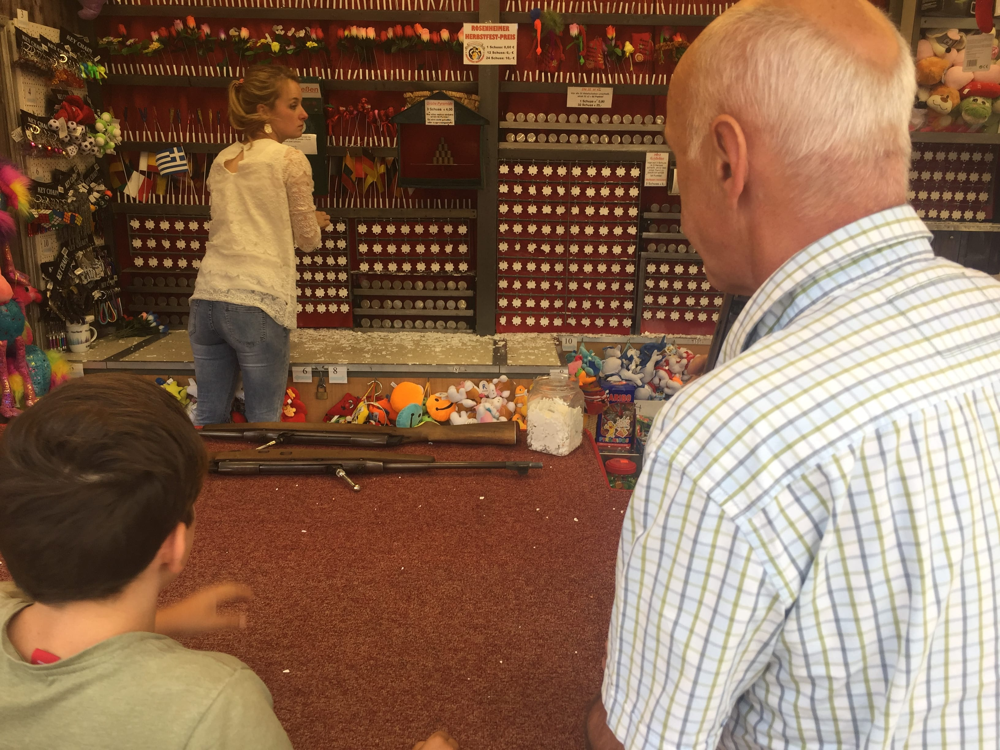
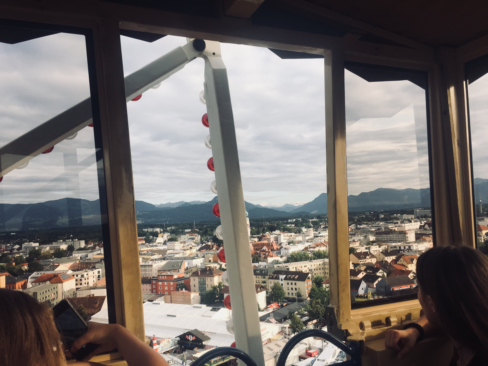
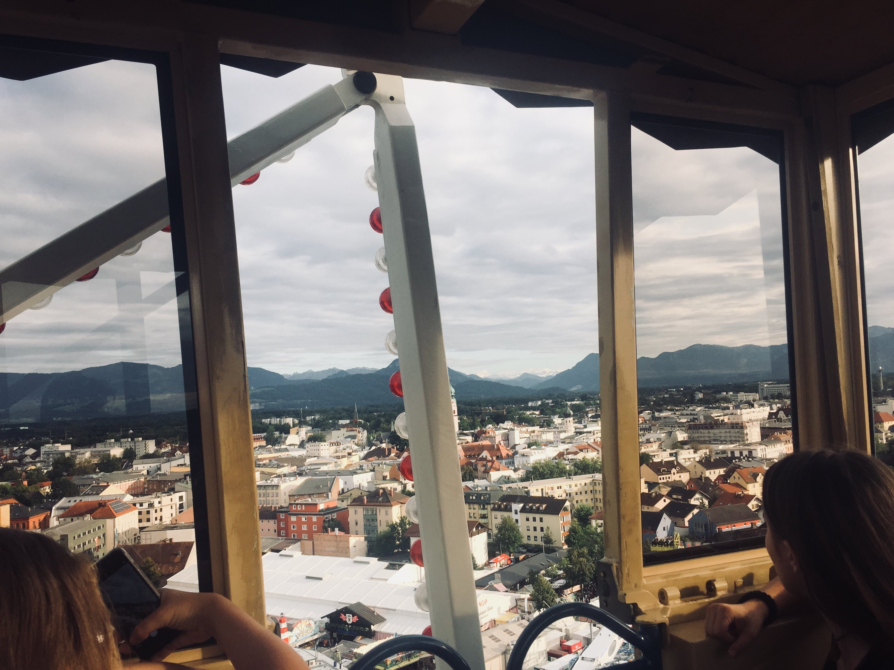

Hos feriefamilien Huber d. 18-26 August.
Dag 1.
Da Jeg steg ud af toget i münchen, kunne jeg ikke rigtigt finde nogen der lignede en værtsfamilie, så jeg begyndte bare at gå. Så lige pludselig hørte jeg nogen råbe mit navn: "MARIUS! MARIUS!"
Det var da at jeg vendte mig om at jeg så blev mødt at en dame og to drenge. Vi hilste på hinanden. Det var Moderen Osita, drgenen Dominik(12) og drengen Killian.(15)
Vi gik ud mod bilen og kørte
hjem. På turen i bilen, snakkede vi lidt om hvad hinanden lavede og forskellige ting. Jeg fortalte at min far havde en grisefarm med flere tusind grise, så blev de vildt overrasket, og de fortalte
mig lidt om hvad de lavede, og sådan.
Da vi var hjemme efter en times kørsel, så jeg at de havde et gigantisk hus bygget i træ. Jeg kom ind og hilste på faderen Alois og datteren Osita(14) Ja, jeg ved
det. Både moderen og datteren hedder Osita, det forvirrede også mig i starten. Så fik jeg pakket ud på mit også gigantiske værelse. Jeg havde enda min helt egen 5 meter brede balkon. Tænk engang.
Efter udpakningen mødte jeg deres to katte Findus, og Lili. Lili er noget af en princesse. Efter det, spurgte drengen Dominik mig om jeg ville spille noget badminton, det ville jeg gerne, efter det
spillede vi fodbold sammen med Killian. Det var så der jeg kom til at skyde Findus med bolden lige på tuden. av av, stakkels kat. Så var der aftensmad, vi fik det klassiske, Snitzel med pommes frittes.
Efter maden, tog vi ud til den lokale sø og tog os en svømmetur. Der mødte jeg så nogle af Dominiks venner. Da vi så var hjemme igen, brugte vi resten af aftenen på at sidde inde i stuen og se tv.
Da jeg havde skrevet dag 1, fandt jeg ud af at det var lidt for meget, så der kommer ikke så meget de andre dage.
Dag 2.
Jeg vågnede efter en god nats søvn ved at Dominik og Killian kom ind og vækkede mig.(Af en eller anden grund var jeg ekstrem træt de første to uger) Det var tid til Frühstück(morgenmad).
En af de ting jeg elskede ved denne familie, var at vi fik rundstykker HVER morgen.
I dag skulle vi ud og sejle i gummibåd i "inn"en den længste flod i Bayern. Det var mega fedt. Vi var der ude
sammen med nogle at familiens venner, vi var 10-15 stykker. Vi satter os bare ud i 4-5 gummibåde, og lod strømmen føre os. Det var mega hyggeligt, fordi vi havde kiks og sådan noget med. Og så en gang
imellem hoppede vi ud i vandet og badede lidt. Der var vi ude nærmest hele dagen. Om aftenen tog vi hjem og slappede af.
Dag 3 + 4.
Der egentlig ikke så meget de næste par dage. Det var lidt den samme rutine, vi stod op, vi badede lidt og tog hjem.
Men så fandt jeg ud af at Killian også elskede at spille bordtennis, så det spillede
vi meget sammen. De havde nemlig et bordtennisbord. Men ellers, så skete der ikke så meget, ud over at vi har fået badet en del.
Dag 5 + 6.
Så! Mine damer og herer. den 22. august, var det tid til hike. Vi skulle nemlig til Østrig og hike i bjergene sammen med 4-5 andre og Killians ven Phillip. Vi pakkede, og kørte så mod Østrig i to biler.
Efter en god times kørsel var vi ved foden af bjerget. Så med vores tunge rygsække, var det var op, op, op og atter op. Gud hvor kan jeg stadig mærke det. Endomondo viste det kun som to en halv kilometer,
men det føltes som 10.
Da vi efter mange liter sved endelig var nået op til hytten blev vi mødt af en stor flot klassisk østrigsk hytte. Her slappede vi så af, og gud hvor var det dejligt at ligge ned.
Til aftensmad blev der serveret brød med forskellige slaks pølser og oste. mmmmmmh, mums! Så om aftenen spillede vi uno, og et meget naitonalt tysk kortspil, med sit helt eget sæt kort og regler.
Jeg lærte det ikke helt, men det var i hvertfald noget for sig selv.
Næste morgen var morgenmaden lidt det samme som aftensmaden fra dagen før. Men stadig lækkert. I dag skulle vi helt op på toppen
af bjerget, det var ikke så hårdt som dagen før, men stadig mega hårdt.
Da vi var nået op på toppen, var der nogle sten af sidde på og et stort kors, som var blevet bygget til minde for de faldne østrigere i krigen. Der sad vi lidt tid og tog nogle billeder. Efter det gik vi ned mod hytten igen, og sov.
Da vi havde spist frokost, var det bare ned, ned, ned og atter ned. Gud hvor gjorde det ondt i mine leg. Da vi var nede og ikke havde været i bad i et døgn og havde svedt så meget, kunne det ikke passe bedre med, en dejlig svømmetur i floden. Det var søreme dejligt at blive kølet lidt af. Efter det tog vi ud og spiste is og kørte hjem.
Dag 7.
I dag var ret nederen. Det regnede det meste af dagen, så vi fik ikke lavet så meget. Vi havde planlagt at vi skulle ud og se en gammel historisk by, men regnen gjorde det svært.
Men så var vi så heldige at regnen holdte en lille pause på et par timer, så vi kørte derud og kiggede. Det var vel en fin by. Ikke noget specielt, men det var hyggeligt.
Så købte vi lidt ind og spiste is. Jeg fik en MEGA god is. Den hed en: "Banane Tüte". Som navnet siger, der var banan-is i, en kugle choko-is, flødeskum, chocko-sauce og rigtige banan stykker. Det mindede meget om en bananasplit, men bare i vaffel. Så begyndte det at regne igen, og vi kørte hjem.
Dag 8.
Dag 8.. Den sidste dag. Tja, i dag skete der nu heller ikke så meget. Vi fik spillet noget bordtennis, Killian og Jeg.
Vi fik en mærkelig "Bayern original" pølse til frokost i dag. De kaldte det for en "weiss-wurst". Det de gjorde, var at de skar den i små stykker, og så pillede skindet af pølsen... Det var simpelthen på mærkeligt. Da jeg spurgte hvorfor, var det fordi det smagte bedre. Det er åbenbart noget som alle i Bayern gør. Jeg kunne nu ikke smage forskel. Så jeg spiste den bare med skind.
De har været i gang med en grave-projekt her på gården i dag.
De gravede sådan nogle store beton beholdere ned i jorden, jeg aner ikke hvad det var, men det så vildt ud.
Til aftensmad fik vi pizza, og jeg sidder nu og skriver dette, på denne sidste aften hos familien Huber. Det var nu en dejlig familie. Specielt Dominik. Den lille dreng var der sandelig meget energi i. Han var søreme godt nok også snaksagelig.
Jeg må sige, at hvis der er en ting jeg har lært om tyskere på de 8 første dage her, så er det at de soda-streamer ALT! og jeg mener ALT. Selv deres Appelsin juice og æble juice. Men for at være ærlig, så jeg har allerede 100% vændet mig til det. Jeg har ikke drukket almindelig vand i evigheder nu. Det er nok også fint. Så har jeg da lært noget.
Nå! Men det var alt for denne gang. Læs med i næste afsnit, som kommer til at foregå i Ingolstadt.
Dag 9.
Tænk engang! Det viste sig at den tyske organisation har kludret totalt i det. Det er først den 28. jeg skal til Ingolstadt, så i kommer til at hænge på mig lidt længere herinde.
Siden jeg havde regnet med at tage afsted til Ingolstadt i dag, havde jeg ikke planlagt at lave noget, så der skete INGEN TING i dag.
Så lad os hurtigt springe videre til i morgen!
Dag 10.
I dag er endelig den sidste dag!(går jeg ud fra)
Så i dag skete der en hel masse. eller, nej. Der skete en smule..
Men ja! Hvor kom vi fra, nåh ja! Vi var til rigtig traditionelt tysk hygge!
Vi var til "Herbstfest" i Rosenheim. Med pariserhjul, radiobiler, små tivoli-lignende ting hvor man spiller og vinder priser og så sidst men ikke mindst, et gigantisk telt med flere tusinde fulde tyskere iklædt Leder-hosen!
Der gik vi så nogle timer og hyggede, og spiste noget mad.
Nu er vi så hjemme igen, og jeg venter spændt på i morgen.
PS: Frem over, vil jeg højest sandsyndeligt lægge noget op en gang om ugen, så det ikke bliver så meget.
 



 
